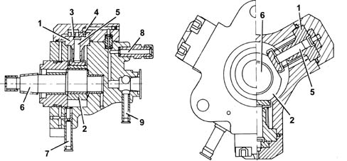
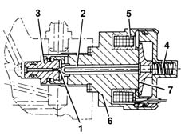

DESCRIPTION OF COMPONENTS
- Path
- Descriptions > 10 ENGINE > 1060 DIESEL FUEL INJECTION SYSTEM > 1060E DIESEL PRESSURE PUMP > DESCRIPTION OF COMPONENTS
- Kind
- system description
- Applies to
- engines: 2.4 JTD 10V; all production periods
- Interactive page
- https://sloeber94.github.io/elrnDB-lThss/en/#/622297
Applies to: engines: 2.4 JTD 10V; all production periods
PRESSURE PUMP
Specifications
Type
The pump is radialjet type with three radial pistons (total cylinder capacity 0.657 cm³) and is driven by a toothed belt without the need to adjust timing.
Structure
Each pumping unit consists of:
- a piston (5) operated by a cam (2) integral with the pump shaft (6);
- a plate-type intake valve (3)
- a ball delivery valve (4).
Because the pressure pump must be fed at a pressure of at least 0.5 bars, the fuel system is equipped with an auxiliary fuel pump submerged in the tank.
The maximum delivery pressure reaches 1350 bars. The pressure pump is lubricated and cooled by the fuel via special channels.

- 1. Cylinder
- 2. Cam
- 3. Plate-type intake valve
- 4. Ball delivery valve
- 5. Piston
- 6. Pump shaft
- 7. Inlet - low pressure (from the fuel filter)
- 8. Delivery - high pressure (to single fuel manifold)
- 9. Delivery - low pressure (to fuel return manifold)
PRESSURE REGULATOR
SPECIFICATIONS
Structure
This is fitted on the pressure pump and controlled by the Engine Control Node. It adjusts fuel feed pressure to the injectors.
The pressure regulator consists mainly of the following components:
- spherical plunger (1)
- pin (2) controlling valve (3)
- preload spring (4)
- coil (5).

- 1. Spherical plunger
- 2. Pin
- 3. Valve
- 4. Preload spring
- 5. Coil
- 6. Case
- 7. Anchor